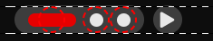
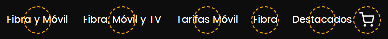

The bookmarklet only highlights elements smaller than 24px (based on their clickable area).
Drag this button to your bookmarks bar. Then, when visiting a website, click the bookmarklet to display a 24px circle around all interactive elements smaller than 24px (considering their clickable area). This allows you to check whether the circles overlap with each other. The circle has a red border and may not contrast well against certain background colors.
Note: On some layouts, the bookmarklet might highlight hidden or non-fixed elements depending on how the site is built. Additionally, this tool is not fully accessible for users with low vision, as it does not offer sensory alternatives.
Circles (2.5.8) AAYou can also right-click and choose "Bookmark this link" if you're on mobile or unable to drag it.
More information: 2.5.8 Target Size Minimum
This is an optional extra to check for elements smaller than 44px by 44px. It does not analyze overlaps; it simply highlights all elements below the threshold.
 Circles (2.5.5) AAAMore information: 2.5.5 Target Size (Enhanced) (Level AAA)
If you have feedback, suggestions, or find any bugs, feel free to contact me at: emilianomontani@gmail.com
The code is open to improvement and customization. If you make any enhancements, I’d be happy to test them!
I hope this tool is helpful in your daily work! Thank you very much for your collaboration. :)